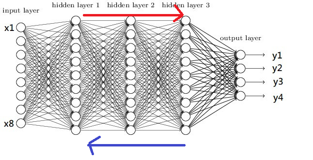
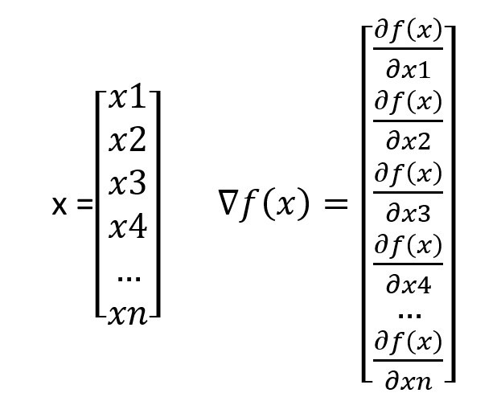
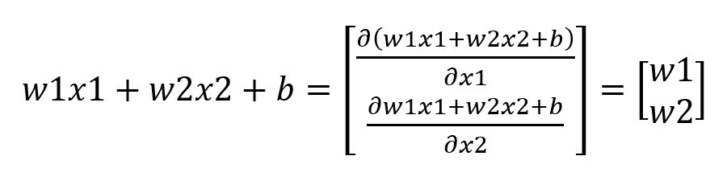
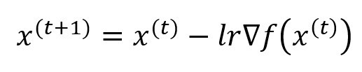
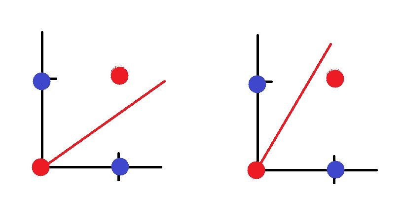
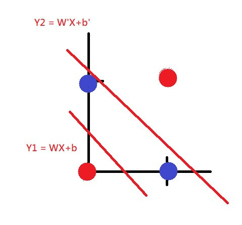

【day26】手刻神經網路來解決XOR問題-多層感知器 (Multilayer perceptron) (上)
發布日期: 2022-09-30 13:51:30
原文連結: https://ithelp.ithome.com.tw/articles/10301417
前向傳播、反向傳播
昨天大致上提到了前向傳播 (Forwardpropagation)與反向傳播 (Backpropagation)，但因為是單層感知器所以我們沒有太深入了解，而且我去看昨天的文章發現有些部分會讓人誤會(截稿前才快寫完RRRR)，所以今天要來重新講解，什麼是前向傳播什麼是反向傳播。

深度學習基本上就是在做前向傳播與反向傳播，而前向傳播的定義非常簡單，就是在圖片中紅色箭頭的部分，所謂的前向傳播算法就是，將上一層的輸出作為下一層的輸入，直到運算到輸出層為止，前向傳播的概念非常簡單，我們所有的神經網路模型都是要先進行前向傳播計算，從而計算loss值，任何在複雜的神經網路都能用以下公式來表達
Σσ(WnXn+b)(σ是激勵函數、b是偏移量)，但昨天提到了前向傳播在單層感知器的更新方式是一次更新所有數值，所以只有前向傳播的網路效果自然會很差。
所以才會有了反向傳播的方式，反向傳播是一種與最佳化理論(Principle of optimality)結合使用的方法，這個方法會根據所有神經網路的權重來計算損失從而更新梯度，所以我們只需要計算每一層神經網路的梯度，就能夠完成反向傳播，接下來我們看到計算方式(左側為輸入，右側為梯度公式)。

我們知道昨天計算的單層感知器，最後的輸出結果是W1X1+W2X2+b(矩陣表示為w.t+b)，我們把他帶入到∇f公式裡面就會變成

這時候我們就可以利用計算出來的梯度套用至梯度下降的公式裡面(
更新後權重 = 前一次訓練的權重 - 學習率*前一次訓練的梯度)
最後我們把整個神經網路的公式都統整起來
前向傳播:y = Σσ(WnXn+b)
反向傳播計算梯度:對所有輸入都做偏微分(含隱藏層輸入)
梯度下降:更新後權重 = 前一次訓練的權重 - 學習率x前一次訓練的梯度
這樣子就是所有神經網路所在做的計算了。
XOR問題
如果你昨天有嘗試過OR、AND以外的邏輯閘，你會發現NXOR與XOR不管怎麼調整學習率都無法完成訓練這是因為XOR在單層感知器上是不能被實現的。
我們把單層感知器視覺化，紅點代表XOR為0的數值，藍點代表為1的數值，紅線則是單層感知器，在這個例子中我們不管怎麼畫線都無法將紅點與藍點分開。

那我們該如何把紅藍點分開呢?答案很簡單就是畫兩條線就可以了

也就是我們要將只有單層的神經網路，多增加一層神經網路也就是下圖的形式，這種網路架構就稱之為多層感知機(Multilayer perceptron)簡稱MLP。

我們可以注意到一件事情，這與我們在【day3】來辨識圖像-深度神經網路(Deep Neural Network)學習到的DNN是不是很像呢?因為MLP其實與DNN是一樣的，差別在於中間的隱藏層數量不同，通常DNN是指隱藏層數量大於2層的神經網路(畢竟叫做Deep Neural Network)，若只有一層我們通常就會叫他MLP，不過你把DNN與MLP混在一起大家還是會知道你在說什麼。
今天我們就先說到這裡好了，昨天接觸到了一些新程式所以今天只講解理論。明天我們要來講解如何手刻出MLP的神經網路，我們會一次比對兩種寫法分別是通過pytorch來快速的計算梯度與反向傳播，另一種則是手刻公式來計算梯度與反向傳播的方式。